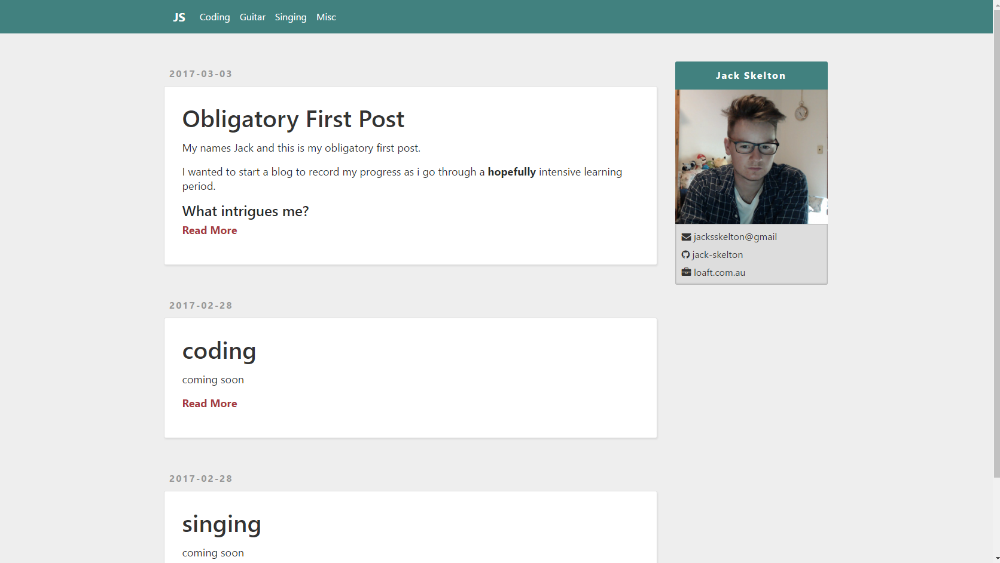

Obligatory First Post
My name is Jack and this is my obligatory first post.
I wanted to start a blog to record my progress as i go through a hopefully intensive learning period.
What intrigues me?
Some of my stronger interests ill be writing about include:
- Programinng (in particular web development)
- Music (I play guitar at an intermediate level, though my main focus will be on my not so great voice)
And I’ll throw in whatever, somewhat interesting, things i can think of.
Site design
In general I appreciate a minimalistic design. Where everything has its purpose and nothing more (very philosophical). This seems to make processing a lot easier on my brain.
This will probably be reflected in my writing (which I also hope to improve), as well as the design of this site. Right now the site is a bit on the minimal side of minamalistic, though I’ll be gradually adding features. My main goal was to get a working site out so I could begin writing!
Snapshot of the initial site

screenshot of site upon creation